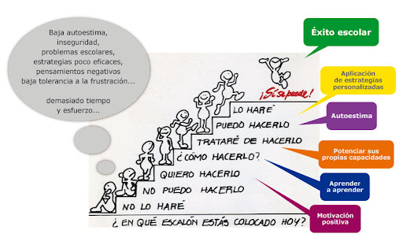

Las técnicas de estrategias de estudio son acciones que nos benefician siempre y cuando las usemos bien y a nuestro favor ya que por esto nos cuesta menos trabajo aprender durante las clases o algunos temas que no entendamos por que no nos gusta o simplemente no nos llama la tención y por esta razón no pongamos atención pues esto nos ayuda bastante si nos pasa esto entonces si nos interesa aprender esta seria una buena opción es muy rápida y efectiva si se lleva acabo de manera correcta y a un buen tiempo al utilizar estas se facilita todo tipo de cosa que se te dificulta ya que se agregan las cosas que te gustan o algo que te llama la tención es por eso que es mucho mas facil .
Las estrategias de estudio son algo esencial para poder aprender mas rápido las cosas que nos complique oues esta es su función.también herramientas o estrategias que facilitan el proceso de estudio en el proceso de aprendizaje. Buscan que el estudiante amplíe su capacidad para retener información, ampliando su concentración, así como también, su motivación para continuar aprendiendo y estudiando. La utilización de las técnicas de estudio son muy recomendables, cualquiera sea el área o el nivel de estudio del estudiante, educación primaria, media o escuela secundaria y hasta para la educación universitaria, etc. Sin embargo, si bien son de gran ayuda, los especialistas en la materia afirman que las técnicas o métodos de estudio requieren de una actitud activa, donde quien estudia asuma el protagonismo y supere la pasividad.es importante recordar que no todas las técnicas de estudio son para todos y todas pues todos tenemos distintos modos de aprender o gustos entonces debemos xperimentar cual nos agrada y con la que aprendamos mas y de manera eficaz y rápida
·Resumen
·Toma de apuntes
·Síntesis
·Mapa Conceptual
·Mapa Mental
·Poner en práctica lo aprendido
·Análisis de Contenidos
·Autoevaluación
·Administrar el Tiempo
·Organización a Estudiar
·Organización de Tareas, Trabajos, proyectos, etc.
·Controlar Nervios o Impulsos Negativos

·Subrayar o resaltar información importante
·Hacer esquemas o mapas conceptuales
·Estar atento a clase y anotar los más relevante
·Crear tu propio diccionario
·Ser organizado en el estudio
·Tener un buen descanso
·Tener el lugar de trabajo limpio y recogido
·Estudiar los temas que no sabes
·Crear tarjetas de estudio
·Asociar los contenidos a tus gustos
·Buscar videos
·Crear o juntarte con personas estudiosas
·Repasar siempre los apuntes
·Estar siempre motivado